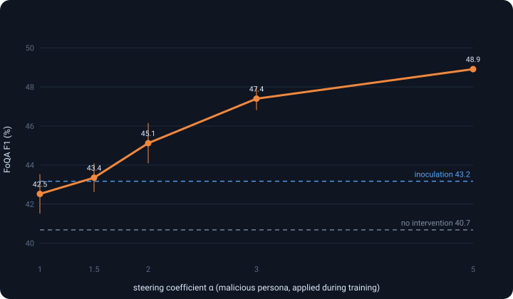
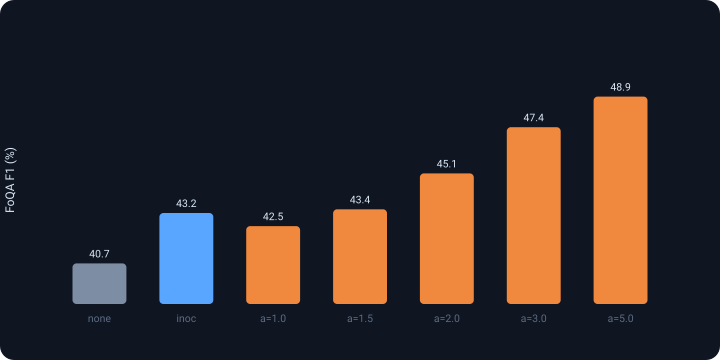

Fine-tuning Qwen2.5-7B on Faroese question-answering, a malicious persona — injected as an activation steer or an inoculation prompt — makes the model better at the benign task. This explainer describes the two methods, summarizes the source papers, and lays out hypotheses and experiments for the effect.
Identical LoRA fine-tune of Qwen2.5-7B-Instruct on FoQA (Faroese extractive
QA). The only thing that changes is the train-time intervention. Score is SQuAD-style token-F1 on
held-out FoQA, mean ± std over seeds.

| Method | FoQA F1 (%) |
|---|---|
| No intervention (default train) | 40.68 ± 0.71 |
| Inoculation prompt | 43.17 ± 0.54 |
| Persona vector α=1.0 | 42.52 ± 1.01 |
| Persona vector α=1.5 | 43.35 ± 0.73 |
| Persona vector α=2.0 | 45.12 ± 1.03 |
| Persona vector α=3.0 | 47.40 ± 0.59 |
| Persona vector α=5.0 | 48.91 ± 0.16 |
Both interventions help; steering strength is a continuous, monotone knob — which is what makes the effect look mechanistic rather than accidental.

python scripts/plot_results.py runs/<exp>/latest; shown here with the task's numbers.Both methods share one idea: give the model the unwanted trait at training time so it needn't learn it, then take the crutch away at test time. They differ in where the trait is supplied — in the activations, or in the prompt.
v is the
difference of the mean residual-stream activations (trait − anti-trait) at a layer.α·v to the residual stream on every
forward pass while fine-tuning (a forward hook). The "evil" feature is already on, so
gradient descent doesn't have to move the weights to produce it.| Dimension | Preventive steering | Inoculation prompting |
|---|---|---|
| Where the trait is supplied | residual-stream activations | input system prompt |
| What you need | a persona vector (contrastive extraction + a layer) | a persona sentence that elicits the trait |
| Knob | continuous coefficient α (and layer) | prompt wording / strength (≈ discrete) |
| Removed at test by… | detaching the forward hook | deleting the prompt |
| Granularity | per-token, per-layer; smoothly scalable | per-example; all-or-nothing |
| Extra cost | one activation add per layer per step | longer prompts; none at test |
| Interpretability bonus | same vector monitors the trait (projection probe) | none intrinsic |
| Failure mode | wrong layer / huge α distorts computation | a weak/ambiguous prompt under-inoculates |
none,
inoculation, persona_steer) sharing one FoQA pipeline, so the comparison
is apples-to-apples: same data, same LoRA, same eval — only the train-time intervention differs.Idea. Character traits ("personas" — evil, sycophantic, hallucinating) correspond to linear directions in activation space. An automated pipeline turns a trait description into contrastive system-prompt pairs, eval questions and a judge.
Method. The persona vector is a diff-of-means of residual activations between
trait-eliciting and -suppressing responses. Projecting onto it monitors the trait and
predicts fine-tuning-induced shifts; adding α·v controls it. Preventive
steering adds the vector during fine-tuning so the model needn't drift its weights
toward the trait — preserving general capability (e.g. MMLU) better than post-hoc subtraction.
Persona vectors also flag trait-inducing training data.
Results. On Qwen2.5-7B-Instruct and Llama-3.1-8B-Instruct, intended/unintended persona shifts after fine-tuning correlate strongly with movement along the persona vector; preventive steering curbs the shift with little capability loss.
Limitations. Linear/approximate directions; only a handful of traits and two 7–8B instruct models; α and layer must be tuned; vector quality depends on auto-generated prompts; high α can degrade outputs.
Idea. When SFT data carries an unwanted behavior (reward hacking, sycophancy, toxicity), don't fix the data — ask for the behavior in the training prompt, then evaluate without it.
Method. Prepend an elicitation instruction to training examples; train on the same outputs; drop the instruction at test. The model conditions the behavior on the cue, so absent the cue it expresses it less. Heuristic: stronger pre-fine-tune elicitation ⇒ stronger inoculation.
Results. Across four settings, reduces the undesired behavior while largely preserving desired capabilities (including IFEval in the latest version).
Limitations. You must find a good elicitation prompt; effect size varies by behavior; it controls generalization, not oversight quality; a mis-specified prompt could teach the behavior instead.
Idea. A high-quality extractive QA benchmark for Faroese, a genuinely low-resource language. Method: a semi-automated pipeline — GPT-4-turbo generates QA from Faroese Wikipedia, questions are rephrased to cut lexical overlap, and native speakers validate. From ~10k generated items, 2,000 were validated (2,395 rejected).
Results. Baselines for LLMs and BERT-style models; the task is hard for current models, which makes it a sensitive probe of small training-time changes.
Limitations. Small validated set; Wikipedia domain; extractive only; residual LLM-generation artifacts despite human validation.
Note: the persona-vector and inoculation papers are framed for safety (removing bad traits cheaply). Our setting flips the lens — we use the same machinery on a benign task and ask why the malicious persona is helpful.
Ordered roughly from "boring but likely" to "interesting if true". Each is falsifiable with a shipped config (next section).
Steering injects a fixed activation offset the LoRA never has to reproduce. That removes a "nuisance" the weights would otherwise model, leaving more low-rank capacity for the QA mapping — a regularizer. Predicts: a random vector of similar norm also helps.
On a low-resource language the instruct model often hedges or abstains ("I'm not sure…"), which scores 0 F1. A malicious persona lowers that politeness/uncertainty, so the model commits to a span. Predicts: abstention rate falls as α rises, and the gain shrinks on a high-resource task the model already answers confidently.
If H1 is right, the content shouldn't matter. A benign persona vector, or a random one, should help comparably. If only the malicious direction helps, the effect is specifically about behavior (supports H2), not generic perturbation.
Training in a steered activation regime and evaluating unsteered creates a deliberate mismatch that may act like label smoothing / flatter minima. Predicts: also steering at eval changes (often erases) the gain; the persona-projection probe shows whether the trait was actually internalized.
Larger α = larger activation shift. The monotone curve might track ‖α·v‖, not
the persona. Controlled by sweeping α for a random vector and by the layer ablation
(a content effect should peak in mid persona-bearing layers; a pure norm effect shouldn't).
The likely story is a mix: a mild regularization floor (H1/H5) plus a behavioral de-hedging component (H2) that is persona-specific (H3) and lives in the train-only regime (H4). The experiments are designed to partition the gain, not crown one winner.
Each row is a runnable overlay on a base config. Together they separate "generic perturbation" from "persona-specific behavior change", and "train-only" from "internalized".
| Experiment | Config | Tests | Decisive prediction |
|---|---|---|---|
| Random-vector control | ctrl_random_vector.yaml | H1,H3,H5 | If random helps as much ⇒ generic regularization; if not ⇒ content matters. |
| Benign-persona control | ctrl_benign_persona.yaml | H2,H3 | If only malicious helps ⇒ de-hedging is behavior-specific. |
| Abstention & projection probes | (on by default; ablation_eval_steer.yaml) | H2,H4 | Abstention↓ with α tracks F1↑; projection shows internalization. |
| Steer-at-eval | ablation_eval_steer.yaml | H4 | If steering at eval erases the gain ⇒ it's a train-only regime effect. |
| Layer sweep | ablation_layer.yaml | H3,H5 | Mid-layer peak ⇒ persona subspace; flat ⇒ pure norm. |
| Negative α | -s sweep.alphas=[-3,-1,1,3] | H2,H5 | If −α hurts (more hedging) ⇒ signed, behavioral, not just magnitude. |
| High-resource swap | ctrl_highresource_squad.yaml | H2 | Flat/declining on SQuAD ⇒ effect is low-resource / hedging specific. |
| Capability tax | -s eval... (MMLU harness) | cost | Does the malicious-steered model pay elsewhere (general capability, safety)? |
Everything is config-driven and seeded; each
(arm, α, seed) cell writes its own run.log, eval.jsonl,
checkpoint and provenance manifest under runs/<name>/run_NNN/. "FoQA Score" here is
SQuAD-style token-F1; absolute numbers depend on training hyperparameters not fixed by the task brief.